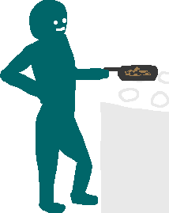

Intro  There is a fundamental balance between the activities individuals naturally have the right to do and those which are deemed bad. For example sautéing with a frying pan is perfectly acceptable. > ==> Go Back